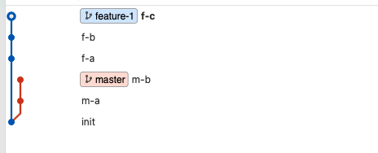
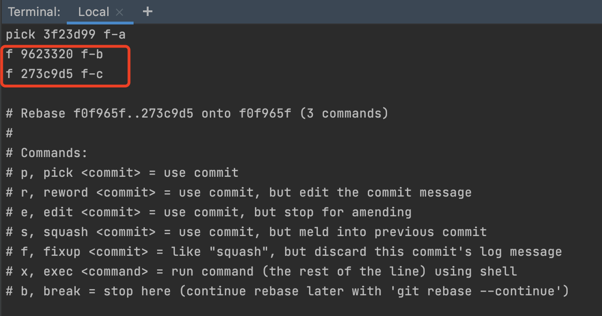
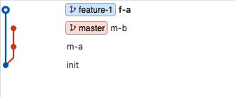
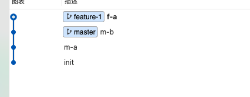

1. 为什么使用rebase而不是merge进行分支合并
1.1. 场景和问题
当前应用开发中，git可谓是不可或缺的一个版本管理工具。 这次我们要介绍的两个命令是merge和rebase，这两个命令都可以合并commit，那么他们有什么区别呢，日常使用中，应该如何选择？有什么注意事项呢?
一图胜千言，使用merge,你得到的git提交历史是这样的

使用rebase，git历史是这样的

另外，我们开发一个feature，不太可能所有的代码都开发完，只提交一个commit，通常我们是这么开发的

我们希望该分支在merge到master前，压缩成一个commit，这个时候，需要用rebase。
1.2. 实战
1. 使用git rebase进行合并
接下来，我们从实战出发，看下如何使用rebase完成一次feature的合并。
如下图，有两个分支，master和feature-1

-
第一步 首先压缩成一个commit
git rebase -i [commit-id] 这里填init对应的commit id或者HEAD~3，表示当前节点往前推3个节点

根据这里的提示，可以选择是否修改提交信息，将pick替换成如下

保存，然后就合并完毕了

> git reset也可以实现压缩commit，但是却无法利用之前的commit message，并且方式有些风险且过于hack，因此本文不再展开。
-
第二步 再使用rebase merge到master
git rebase master

在实际的使用中，绝大多数情况可以忽略第一步，直接执行第二步，如果没有冲突，或者冲突比较好解决，我们可以很快速的合并，当遇到复杂的冲突问题时，可以分成这两步去做。